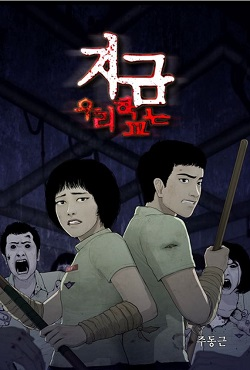
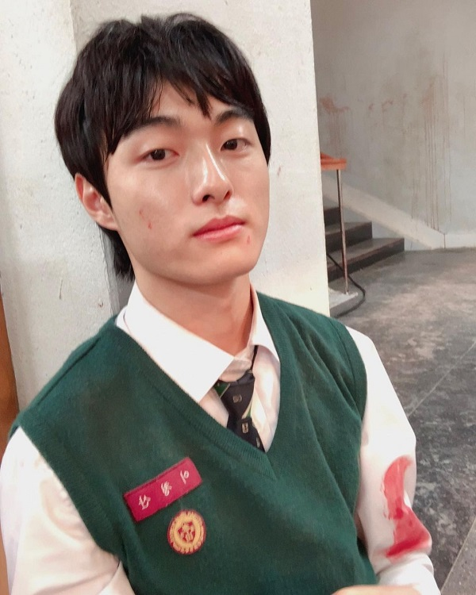
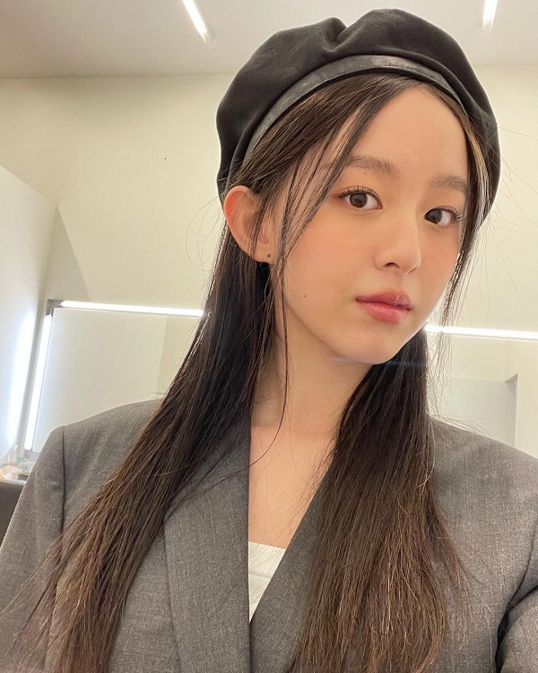
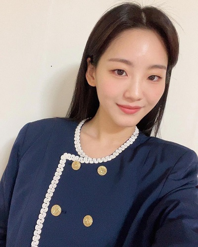

[雷]韓劇，殭屍校園
![[雷]韓劇，殭屍校園](https://tayinv.github.io/images/post/Series/allofusaredead/allofusaredead.jpg)
目錄
圖片來源: Netflix
先特別說明，以下心得純屬個人觀感心得
個人評價：🌕🌕🌕🌑🌑
血腥程度：🌕🌕🌕🌕🌗
影集介紹
官方正式預告片：
先簡單介紹一下這部影集：
<殭屍校園>是改編自朱東根創作，並連載於Webtoon的網路漫畫。主要講述在殭屍病毒從孝山高中開始蔓延，人們為了想存活而經歷的各種無法預測的狀況‧‧‧
網漫圖片:

圖片來源:namu
回到目錄
—————————————–雷————————————————
不專業心得
不得不說，韓國真的很會拍殭屍片🧟🧟♀️
每個殭屍都演得超讚，他們是不是有殭屍課程，還是這些殭屍跟失速列車的是同一批😂
整部12集看完，除了逼真的殭屍、腸子、咬人畫面，還是要來吐槽一翻…
-
女主爸整個戰力超強，見到女兒後明明就跑得過，硬要自己去領便當…
-
女主爸在逃離隔離區時，一堆人拿槍掃射他，一槍都射不到…? 只有在水中被射到腿，太扯了吧XD
-
中間安插一個軍人橋段，明明只剩5天退伍，一上戰場就變殭屍，安排得太刻意…
-
前面女主為了救男主爬去科學教室拿空拍機，有隻老鼠爬到她腳上，阿然後結果勒😂? 沒有結果…
-
粉紅毛衣女，前面行為讓人氣的牙癢癢，後面自己想通想去和解，一開門就被咬…那還鋪陳那麼多是…?
-
為什麼班長被咬一口變半屍，其他人就變殭屍? 因為只被咬一口?
-
被霸凌女的復仇也太輕描淡寫XD 燒學校為什麼不留在原地等學校確定燒完再走? 根本為了要幫主角群開頂樓門吧…
-
混混男怎樣都死不了也太無敵…XD 自己是覺得蠻不合理的
-
未婚媽媽、直播笨蛋男、兩個警察的腳色都有點硬要的感覺…我是覺得沒什麼重點
-
還有結尾的部分，我是覺得有點傻眼，班長說還有跟他一樣的半屍，然後就跳出去…恩…XD?
但是除了這些，還是有感人的地方
-
男主媽為了救兒子跑去學校，在變殭屍前滿滿的跑馬燈畫面
-
班導在一群P孩中擔任調解的腳色，為了救粉紅毛衣女出去送死，到最後還在教學生道理，能有這種老師真的很幸運
-
未婚媽媽的腳色雖然很沒必要，雖然一開始想丟掉孩子，但最後為了孩子不被殭屍咬，在變身前把自己綁起來..QQ
-
其中有不斷的強調，生存意志的議題。在絕望的環境下，各種黑暗與良善的人性都嶄露無遺，從互相懷疑背叛、關懷彼此照顧彼此、到是否會選擇犧牲自己來拯救朋友都有用心刻畫出來。
回到目錄
演員們
- 尹燦榮윤찬영：(🍰: 2001/4/25)

圖片來源: yooncy1
出演過：岬童夷、六龍飛天、浪漫醫生金師傅、雖然30但仍17、醫生耀漢等
- 朴持厚박지후：(🍰: 2003/11/7)

圖片來源: 03_h
出演過：復仇筆記2、美麗的世界、被操縱的都市、小婦人、致命目擊等
- 朴所羅門박솔로몬：(🍰: 1999/11/11)
圖片來源: lomon991111
出演過：傳說的魔女、百年的新娘、Doctors、復仇筆記、外貌至上主義等
- 趙怡賢조이현：(🍰: 1999/12/8)

圖片來源: yihyun_1208
出演過：機智醫生生活、學校2021、壞刑警、我的國家、變身等
- 劉仁秀유인수：(🍰: 1998/3/25)
圖片來源: k.a_innsoo
出演過：大力女子都奉順、學校2017、當你沉睡時、我的ID是江南美人等
- 李瑜美이유미：(🍰: 1994/7/18)
圖片來源: leeyoum262
出演過：Voice 2、醫生耀漢、觸及真心、魷魚遊戲等
- 吳慧秀：(🍰: 1995)
圖片來源: 5yes__
出演過：?
回到目錄
結語
面對自己身邊的朋友與親人的離開，該如何在感到絕望時重新找回活下去的意志？或許殭屍校園給了我們答案，只有留下來的人才能記住自己深愛的人與那些珍貴的回憶。
嘿，這個結論下得不錯吧🤣🤣🤣
回到目錄